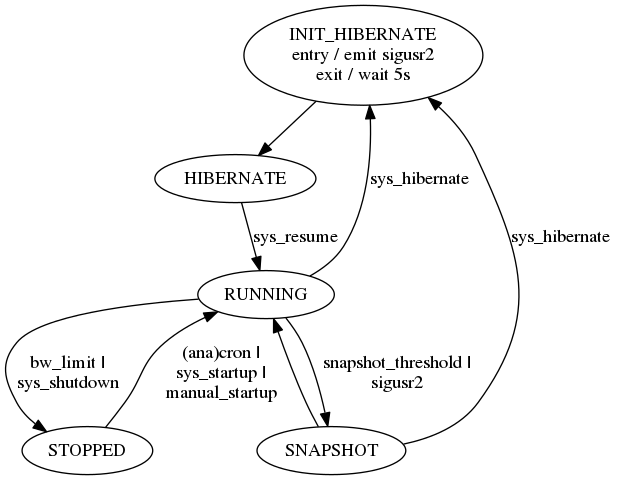

documentation
Table of Contents
1 My backup approach
My backup solution is based on tarsnap. The idea is to start the tarsnap client each day via (anacron). As my uplink is pretty slow (DSL) and sometimes flaky, a snapshot is created every 300MB (the tarsnap documentation recommends 1GB as minimum size).
There are other items that the backup wrapper will try to take care of:
- Handle loss of network connection gracefully
- Start tarsnap once a day, if no session is already running
- Stop or suspend the tarsnap process if the network connection changes from wlan to UMTS, as my UMTS bandwith / day is limited and expensive
- Stop or suspend the tarsnap process when running on laptop battery
- Start or resume the tarsnap process when an external power supply is connected
- Start or resume the tarsnap process when back on wlan or lan connection
- Insert a snapshot before going to hibernate / shutting down the computer
- To prevent runaway tarsnap sessions to waste all bandwith, limit the bandwith per session
1.1 System state machine

1.2 Useful Commands
1.2.1 List all archives
sudo tarsnap --keyfile /root/tarsnap.key --list-archives
1.2.2 Create 2GB backup archive
sudo tarsnap -c -f "mybackup-$(date +%Y%m%d%H%M%S)" --cachedir /home/flo/.tarsnap-cache --keyfile /root/tarsnap.key -v -X tarsnap-excludes.txt --print-stats --maxbw 2G --checkpoint-bytes 300000000 /home/flo/
1.2.3 Create backup
sudo tarsnap -c -f "mybackup-$(date +%Y%m%d%H%M%S)" --cachedir /home/flo/.tarsnap-cache --keyfile /root/tarsnap.key -v -X tarsnap-excludes.txt --print-stats --maxbw 2G --checkpoint-bytes 300000000 /home/flo/
1.2.4 Recover last archive (usually automatic on next archive creation)
sudo tarsnap --recover -f mybackup-20141208 --cachedir /home/flo/.tarsnap-cache --keyfile /root/tarsnap.key
1.2.5 Print current operation on stderr
sudo kill -s SIGUSR1 $(pidof tarsnap)
1.2.6 generate checkpoint
sudo kill -s SIGUSR2 $(pidof tarsnap)
1.2.7 Check backup size using du and considering tarsnap-excludes.txt
du -X /home/flo/tarsnap-excludes.txt --max-depth=1 /home/flo | sort -n